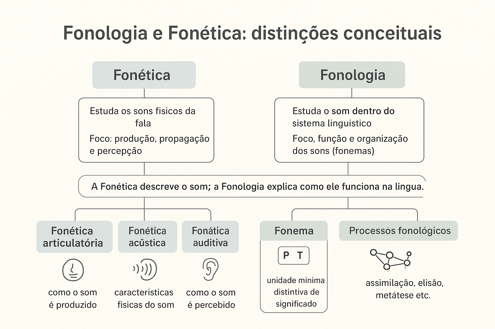

Fonologia e Fonética: distinções conceituais na ciência da linguagem
No vasto domínio das ciências da linguagem, o estudo da matéria sonora verbal constitui a porta de entrada para desvendar como o cérebro humano concebe, emite e decodifica mensagens articuladas. Dentro desse campo investigativo, duas disciplinas científicas complementares, porém epistemologicamente distintas, ganham centralidade: a Fonética e a Fonologia. Embora o senso comum e práticas escolares desatualizadas frequentemente fundam ambas sob o rótulo vago de "estudo dos sons", elas operam em planos ontológicos e metodológicos inteiramente diferentes.
A Fonética debruça-se sobre o som enquanto fenômeno físico, acústico e biológico em sua manifestação concreta: a fala (parole). Ela examina a fisiologia do trato vocal, a propagação das ondas de pressão pelo ar e a resposta neurosensorial do sistema auditivo. A Fonologia (ou Fonêmica), por sua vez, ergue-se sobre o plano da língua enquanto sistema abstrato e convenção social (langue), ocupando-se dos sons enquanto fonemas — representações mentais mínimas dotadas de valor funcional, opositivo e distintivo de significado.
Neste artigo fundamentado no Estruturalismo de Praga, na Fonologia Gerativa e na Linguística Aplicada, analisaremos as fronteiras entre fone, alofone e fonema, as três dimensões da pesquisa fonética (articulatória, acústica e auditiva), os princípios da comutação e da distribuição complementar na fonologia, além de aplicações didáticas voltadas ao ensino de língua materna e questões resolvidas de concursos públicos.

A ruptura epistemológica: de Saussure ao Círculo Linguístico de Praga
A distinção entre Fonética e Fonologia consolidou-se formalmente no início do século XX. Em seu Curso de Linguística Geral, Ferdinand de Saussure (2012) postulou a célebre dicotomia entre a língua (o sistema institucionalizado e compartilhado pela comunidade) e a fala (o ato individual e físico de execução motora). Sob esse prisma seminal, a Fonética pertencia ao reino da fala e da fisiologia, enquanto a Fonologia deveria integrar a ciência da língua.
Coube, contudo, aos mestres do Círculo Linguístico de Praga — com destaque para Roman Jakobson e Nikolai Trubetzkoy em sua obra clássica Principes de Phonologie (1939) — sistematizar rigorosamente a linha divisória entre ambas as ciências.
O postulado clássico de Nikolai Trubetzkoy
Para Nikolai Trubetzkoy (1949, p. 12), a fronteira entre as disciplinas é uma decorrência direta de seus objetos formais: “A Fonética é a ciência da face material dos sons da linguagem humana; a Fonologia é a ciência dos sons da língua enquanto elementos que desempenham um papel funcional no sistema de comunicação”. Em síntese: a Fonética investiga o que o falante fisicamente pronuncia; a Fonologia investiga o que o falante mentalmente visa e reconhece funcionalmente.
No cenário brasileiro, Joaquim Mattoso Câmara Jr. (1970; 2004) foi o pioneiro a introduzir os princípios praguenses na descrição do português, demonstrando que ensinar fonologia é emancipar o estudante da ilusão de que a língua se reduz aos seus acidentes fisiológicos transitórios.
Quadro comparativo: Fonética versus Fonologia
Para apreender com clareza a separação metodológica e conceitual entre as duas disciplinas, observe o confronto direto de suas categorias operatórias:
Fonética (Ciência Material da Fala)
Ciência natural e descritiva que estuda a substância material dos sons produzidos pelo aparelho fonador humano.
Objeto de estudo: O fone [ ] (som concreto e mensurável).
Natureza: Física, acústica, anatômica e empírica.
Universalidade: Válida para os sons articuláveis por qualquer ser humano.
Instrumentos: Espectrogramas, palatogramas, acústica laboratorial.
Fonologia (Ciência Funcional da Língua)
Ciência social e formal que investiga a função e a organização dos sons dentro da matriz estrutural de um idioma específico.
Objeto de estudo: O fonema / / (unidade mental distintiva).
Natureza: Psíquica, relacional, opositiva e convencional.
Particularidade: Específica da gramática interna de cada língua.
Métodos: Teste da comutação, pares mínimos, regras fonotáticas.
As três vertentes investigativas da Fonética
A Fonética decompõe o ciclo da comunicação falada em três momentos concatenados:
1. Fonética Articulatória
Constitui o ramo mais tradicional e acessível ao trabalho pedagógico. Investiga a fisiologia do trato vocal durante a emissão: a corrente pulmonar expiratória, a ação das pregas vocais na laringe (vozeamento/sonoridade), a posição do véu palatino (oralidade versus nasalidade) e a atuação dos articuladores ativos (língua, lábios) contra os passivos (dentes, alvéolos, palato duro e mole). É ela que classifica os segmentos em oclusivos, fricativos, bilabiais, velares, etc.
2. Fonética Acústica
Examina as propriedades físicas da onda sonora que se propaga pelo ar entre a boca do emissor e o ouvido do receptor. Por meio de softwares de análise espectrográfica (como o Praat), a fonética acústica quantifica a frequência fundamental (F0) medida em Hertz (altura/pitch), os formantes vocálicos (F1, F2, F3) que determinam o timbre e a abertura das vogais, a amplitude medida em decibéis (intensidade/volume) e a duração em milissegundos.
3. Fonética Auditiva (ou Perceptiva)
Analisa os mecanismos biológicos e neurológicos da recepção do som: como a membrana timpânica e a cóclea no ouvido interno convertem ondas de pressão em impulsos eletroquímicos conduzidos pelo nervo auditivo ao córtex cerebral para decodificação cognitiva primária.
O objeto da Fonologia: o Fonema, o Par Mínimo e os Alofones
Enquanto a Fonética constata que um indivíduo jamais pronuncia uma palavra da mesmíssima forma duas vezes — dadas sutis variações de umidade, temperatura e tônus muscular —, a Fonologia demonstra que os falantes ignoram essas microvariações infinitas para focar apenas nas unidades que produzem diferença de significado.
O teste da comutação e os pares mínimos
A prova incontestável da existência de um fonema reside no teste da comutação paradigmática. Ao substituir um único segmento fônico por outro em idêntico ambiente silábico, se o sentido da palavra se alterar, fica comprovado o estatuto de dois fonemas autônomos:
- Pato (/p/) versus Bato (/b/): oposição privativa de vozeamento (surda vs. sonora);
- Cato (/k/) versus Gato (/g/): oposição velar oclusiva de sonoridade;
- Mato (/m/) versus Fato (/f/): oposição de modo e ponto de articulação.
Alofones: a diversidade fonética a serviço da unidade fonológica
Denominam-se alofones as realizações fonéticas concretas de um mesmo fonema que se encontram em variação livre (dialetal ou estilística) ou em distribuição complementar (condicionada pelo contexto fônico imediato). O uso de um alofone no lugar de outro pode soar como "sotaque regional", mas nunca altera o significado do vocábulo:
Alofonia regional no Português Brasileiro
Considere a palavra tia. Em dialetos como o carioca e o paulistano, o fonema /t/ diante da vogal /i/ realiza-se foneticamente como a consoante africada [tʃ] ([ˈtʃi.ɐ]). Em dialetos do interior nordestino ou gaúcho, o mesmo fonema realiza-se como a oclusiva dental pura [t] ([ˈti.ɐ]). Trata-se de dois fones acusticamente distintos [t] e [tʃ], mas que constituem meros alofones do mesmo fonema /t/, pois nenhum falante do português confunde a palavra dita com outro significado.
| Critério de Análise | Exemplo Fonético (Fone [ ]) | Exemplo Fonológico (Fonema / /) | Implicação Linguística |
|---|---|---|---|
| Oposição Semântica | [p] em pala vs. [b] em bala | /p/ ≠ /b/ | Cria par mínimo; gera distinção de significado na língua. |
| Variação Dialetal | [t] em tio vs. [tʃ] em tio | Ambos realizam o fonema /t/ | Variação alofônica; denota procedência geográfica sem mudar sentido. |
| Neutralização em Coda | [s], [z], [ʃ] e [ʒ] em mesmo | Arquifonema sibilante /S/ | Variação fonética condicionada pelo contexto seguinte. |
| Vibrantes Múltiplas | [r] alveolar vs. [ʁ] velar em carro | Fonema vibrante forte /ʁ/ | Variantes alofônicas regionais da mesma matriz funcional. |
| Vocalização da Líquida | [l] velarizado [ɫ] vs. glide [w] em brasil | Fonema lateral /l/ em coda | Processo fonológico de glidezação padrão no PB. |
Processos fonológicos investigados pela Fonologia
Ao analisar o comportamento dos fonemas em contato contínuo na cadeia da fala, a Fonologia mapeia uma série de transformações sistemáticas regulares:
- Assimilação: um fonema altera seus traços para aproximar-se de um vizinho (ex.: a nasalização de vogais orais diante de consoante nasal em cama [ˈkɐ̃.mɐ]);
- Elisão (ou Supressão): queda de fonemas para facilitar a economia articulatória, frequente na linguagem coloquial (ex.: "peraí" por espera aí);
- Epêntese (ou Inserção): acréscimo de um segmento vocálico para desfazer encontros consonantais estranhos à matriz fônica canônica do português (ex.: ritmo pronunciado como [ˈxi.tʃi.mu]);
- Metátese: transposição ou troca de posição de fonemas no interior da palavra (fenômeno histórico que transformou o latim semper no português antigo sempre, ou nas variações populares como iogurte → *iorgute).
Análise fonética e fonológica na prática
Observe a segmentação científica contrastiva de um enunciado real:
Estudo de Caso: A Palavra "Dente"
1. Nível Ortográfico: 5 letras (d - e - n - t - e).
2. Nível Fonológico (Estrutura Abstrata): /d-ẽ-t-e/ (4 fonemas: consoante oclusiva sonora + vogal nasal anterior + consoante oclusiva surda + vogal média-alta átona final).
3. Nível Fonético-Acústico (Realizações Dialetais Concretas):
- Em dialeto paulistano/carioca: [ˈdẽj̃.tʃi] (palatalização do /t/ diante do [i] e epêntese de glide nasal);
- Em dialeto curitibano: [ˈdẽn.te] (oclusiva dental pura e manutenção do [e] átono final);
- Em dialeto nordestino setentrional: [ˈdẽj̃.ti] (tepe dental puro com alteamento da vogal final).
Conclusão do analista: A Fonologia reconhece uma única palavra invariável no sistema (/dẽte/), enquanto a Fonética descreve a pluralidade maravilhosa de suas realizações materiais na sociedade.
Esquema pedagógico: o itinerário analítico do som da linguagem
O percurso da investigação linguística
Corrente de ar expelida → Articulação motora no trato vocal (Fonética Articulatória) → Onda acústica espectrográfica (Fonética Acústica) → Recepção coclear e neural (Fonética Perceptiva) → Filtragem cognitiva mental (Fonologia) → Reconhecimento do fonema distintivo (Semântica / Comunicação).
Questões para estudo e fixação
Questão 1 (Epistemologia Linguística / Concurso Público)
Assinale a assertiva que expressa de forma tecnicamente rigorosa a diferença fundamental entre Fonética e Fonologia:
A) A Fonética estuda a escrita formal dos textos, enquanto a Fonologia estuda a gramática normativa da fala.
B) A Fonética ocupa-se da dimensão material e acústico-articulatória dos sons (fones), enquanto a Fonologia investiga os sons em função de seu valor distintivo no sistema da língua (fonemas).
C) A Fonologia descreve apenas as línguas mortas (como o latim e o grego), ao passo que a Fonética descreve as línguas modernas.
D) Não há diferença real entre ambas, sendo termos sinônimos adotados arbitrariamente por diferentes escolas gramaticais.
Ver resposta comentada
Resposta comentada: Alternativa B. A Fonética é a ciência da substância sonora concreta (como os sons são gerados e medidos fisicamente), e a Fonologia é a ciência da forma funcional abstrata (como os sons operam no cérebro para diferenciar palavras por meio de oposições e traços distintivos).
Questão 2 (Alofonia e Variação Dialetal)
A pronúncia da palavra porta com o "r caipira" retroflexo ([ˈpɔɻ.tɐ]), com o "r carioca" fricativo velar ([ˈpɔʁ.tɐ]) ou com o "r gaúcho" vibrante alveolar ([ˈpɔr.tɐ]) ilustra um caso de:
A) Oposição de fonemas distintivos gerando novos vocábulos.
B) Alofonia em variação dialetal regional de um mesmo fonema arquifonêmico.
C) Erro grosseiro de ortoépia a ser banido da sala de aula.
D) Confusão entre dígrafo e encontro vocálico.
Ver resposta comentada
Resposta comentada: Alternativa B. Trata-se de diferentes realizações fonéticas (alofones) de um mesmo fonema em posição de coda silábica (/R/). Como nenhuma dessas pronúncias altera o significado da palavra porta, a Fonologia as reconhece como variantes da mesmíssima unidade linguística funcional.
Questão 3 (O Método da Comutação)
Por meio de qual procedimento linguístico a Fonologia comprova que os sons [v] e [f] constituem fonemas distintos no português?
Ver resposta comentada
Resposta comentada: Pelo teste da comutação em par mínimo. Ao comutar o segmento [v] pelo segmento [f] em vocábulos como vaca e faca, ou vela e fela, verifica-se a mudança radical de significado. Isso comprova que a presença ou ausência de vibração das pregas vocais (vozeamento) é um traço pertinente e distintivo no sistema do português, elevando esses sons à categoria de fonemas autônomos (/v/ e /f/).
Questão 4 (Transcrições e Notações Científicas)
Na literatura linguística, por que se utilizam barras oblíquas / / para determinadas representações e colchetes [ ] para outras?
Ver resposta comentada
Resposta comentada: Porque as barras oblíquas (/ /) delimitam a transcrição fonológica (ou fonêmica), que registra exclusivamente as unidades mentais funcionais e contrastivas de uma dada língua. Os colchetes ([ ]), por sua vez, assinalam a transcrição fonética, que busca reproduzir com fidelidade a realidade física dos sons articulados, incluindo alofones, nasalizações secundárias e variantes regionais.
Questão 5 (Transposição Didática e Preconceito Linguístico)
De que maneira a articulação entre os conhecimentos de Fonética e Fonologia auxilia o educador no combate ao preconceito linguístico em sala de aula?
Ver resposta comentada
Resposta comentada: Permite ao professor demonstrar cientificamente que as falas populares e os sotaques regionais não são "deformações preguiçosas" do idioma, mas realizações alofônicas perfeitamente lógicas e regulares amparadas na mecânica articulatória da Fonética. Isso transfere o foco da condenação moral do falante para a compreensão sociolinguística das variantes da língua em uso.
Resumo das distinções conceituais entre Fonologia e Fonética
- Fonética: ciência natural e física que analisa os sons da fala (fones) em sua produção, propagação e percepção;
- Subdivide-se em articulatória (fisiologia motora), acústica (propriedades da onda sonora) e auditiva (percepção neurosensorial);
- Fonologia: ciência social e estrutural que investiga como os sons operam no sistema da língua (fonemas);
- O fonema é uma unidade mental abstrata dotada de capacidade de distinguir significados;
- O fone transcreve-se entre colchetes [ ]; o fonema, entre barras oblíquas / /;
- Alofones: variações fonéticas concretas de um mesmo fonema que não alteram o sentido das palavras (ex.: tia com [t] ou [tʃ]);
- O teste da comutação em pares mínimos (pato / gato) é o método que valida a autonomia de um fonema;
- Ambas as disciplinas são interdependentes: a Fonética fornece a matéria bruta empírica, e a Fonologia decifra sua lógica funcional.
Perguntas frequentes sobre Fonética e Fonologia
Qual é a diferença entre fone, fonema e alofone?
O fone é a realização física e acústica concreta do som da fala [ ]. O fonema é a representação mental abstrata que diferencia significados na língua / /. O alofone é uma variante fonética específica que concretiza um fonema sem gerar alteração de sentido (como os sotaques regionais).
A Fonética estuda apenas a Língua Portuguesa?
Não. A Fonética estuda a capacidade universal humana de produzir sons através do aparelho fonador, aplicando-se a qualquer idioma do planeta. A Fonologia, por sua vez, investiga as regras do sistema fônico de uma língua particular.
O que é o Alfabeto Fonético Internacional (IPA)?
É um sistema padronizado de símbolos gráficos criado pela Associação Fonética Internacional para representar de forma inequívoca e universal todos os sons presentes nas línguas humanas, superando as inconsistências das ortografias locais.
Por que dizemos que o fonema não tem significado próprio?
Porque isoladamente o fonema /p/ ou /b/ não veicula nenhum conceito ou ideia. Seu poder semântico reside exclusivamente em sua capacidade de opor-se a outros fonemas para constituir palavras distintas (como em pala vs. bala).
O que estuda a Fonologia Gerativa?
Fundada por Noam Chomsky e Morris Halle, a Fonologia Gerativa propõe que os falantes possuem um conjunto internalizado de regras e traços distintivos subjacentes que convertem representações mentais profundas em realizações fonéticas de superfície.
O que significa distribuição complementar na fonologia?
Ocorre quando duas variantes sonoras de um fonema nunca aparecem no mesmo ambiente silábico. No português, o [tʃ] surge antes da vogal [i], enquanto o [t] oclusivo surge antes de [a], [o] e [u]. Onde um ocorre, o outro é excluído contextualmente.
Como a Fonética Acústica analisa os sons na prática?
Utilizando programas de computador laboratoriais que captam o sinal sonoro por microfone e geram espectrogramas, permitindo enxergar as frequências formânticas, a periodicidade e a energia acústica de cada vogal e consoante.
Por que compreender essa distinção melhora o ensino de gramática?
Porque liberta a aula de português da decoreba cega de regras ortográficas, ensinando o aluno a compreender a fala viva dos falantes como um sistema linguístico legítimo e a escrita como uma convenção sociocultural secundária.
Considerações finais
Compreender as distinções conceituais entre Fonética e Fonologia não é um capricho terminológico da academia, mas uma exigência fundamental para quem deseja dominar o funcionamento real da Língua Portuguesa. Ao separar a substância acústica mutável da fala da matriz funcional estável da língua, o pesquisador e o estudante aprendem a discernir a mecânica fisiológica dos órgãos da comunicação e a admirável arquitetura cognitiva que transforma ruídos de ar em pensamento, sentido e cultura.
Longe de serem ciências excludentes, Fonética e Fonologia sustentam-se em mútua fecundação: a Fonética provê os parâmetros materiais indispensáveis sem os quais a Fonologia seria pura abstração especulativa; a Fonologia fornece a grade relacional e significativa sem a qual a Fonética seria apenas uma infinidade desconexa de medições acústicas de laboratório. Juntas, constituem o alicerce indispensável da Linguística e da pedagogia moderna da língua materna.
Conteúdos relacionados
- Fonologia: fonemas, sílabas e estrutura sonora da Língua Portuguesa — Índice de Conteúdos
- Fonema e Letra: Uma distinção fundamental na análise linguística
- Tipos de Fonemas: Vogais, Semivogais e Consoantes
- Classificação Fonética Detalhada das Vogais
- Fonologia das Semivogais (Glides / Semiconsoantes)
- Encontros Vocálicos e Consonantais: Quando os sons se encontram
- Hiatos, Ditongos e Tritongos: como identificar e exemplos
- O Som das Palavras: Sílaba, Tonicidade e Prosódia
- Processo de Elisão (ou Supressão) de Segmentos Fonológicos
Referências
- CAGLIARI, Luiz Carlos. Alfabetização e Linguística. 10. ed. São Paulo: Scipione, 2009.
- CÂMARA JR., Joaquim Mattoso. Estrutura da Língua Portuguesa. 20. ed. Petrópolis: Vozes, 2011.
- CÂMARA JR., Joaquim Mattoso. Problemas de Linguística Descritiva. 18. ed. Petrópolis: Vozes, 2004.
- CRYSTAL, David. A Dictionary of Linguistics and Phonetics. 6. ed. Oxford: Blackwell Publishing, 2008.
- DUBOIS, Jean et al. Dicionário de Linguística. Tradução de Izidoro Blikstein. São Paulo: Cultrix, 2014.
- JAKOBSON, Roman. Seis lições sobre o som e o sentido. Lisboa: Moraes Editores, 1977.
- LADEFOGED, Peter; JOHNSON, Keith. A Course in Phonetics. 7. ed. Boston: Cengage Learning, 2015.
- SAUSSURE, Ferdinand de. Curso de Linguística Geral. 28. ed. São Paulo: Cultrix, 2012.
- SILVA, Thaïs Cristófaro. Fonética e Fonologia do Português: roteiro de estudos e guia de exercícios. 10. ed. São Paulo: Contexto, 2010.
- TRUBETZKOY, Nikolai S. Principes de phonologie. Traduction de J. Cantineau. Paris: Klincksieck, 1949.
Explore outros conteúdos
Continue seus estudos acessando outras seções do site Mestre Kira: